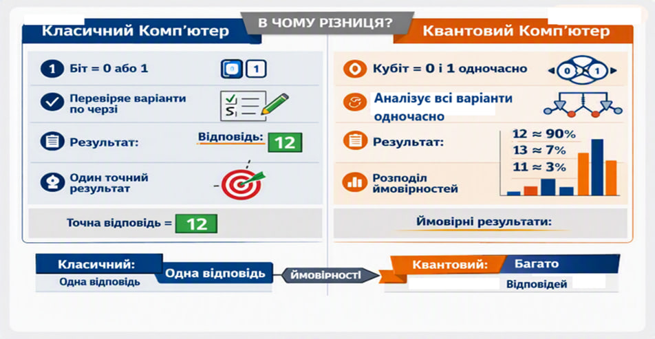

Перехрест Варвара
Науковий керівник
Олена Баталова
Вчитель інформатики
Відділення / Секція
Інформаційні технології
Секція: Кібербезпека
📌 Актуальність теми та практична доцільність
⚡ Актуальність теми
Задача прихованої підгрупи (HSP) є фундаментальною для квантової інформатики, теорії груп та сучасного криптоаналізу. На відміну від абелевих структур, неабелеві групи потребують принципово нових підходів: алгоритм Куперберга є одним із найважливіших інструментів для таких задач, оскільки забезпечує субекспоненціальне прискорення порівняно з класичними методами.
🛡️ Практична доцільність дослідження
Практична доцільність дослідження визначається глобальним переходом до квантово-стійкої криптографії, закріпленим у Меморандумі національної безпеки США NSM-10 (2022), який зобов’язує здійснити міграцію на постквантові алгоритми до 2035 року. У цьому контексті набір стандартів CNSA 2.0 визначає перелік рекомендованих криптографічних примітивів, а директива OMB M-23-02 регламентує порядок інвентаризації та переведення цивільних криптосистем на нові стандарти. Таким чином, аналіз алгоритму Куперберга має безпосереднє значення для оцінки стійкості сучасних криптосистем та аналізу потенційних загроз у період постквантового переходу.
📋 Паспорт наукового дослідження
🎯 Мета дослідження
Дослідити алгоритм Куперберга та показати його можливості для квантового криптоаналізу неабелевих груп у доступній формі.
📌 Завдання дослідження
- Пояснити основи квантових обчислень.
- Розкрити суть задачі прихованої підгрупи (HSP).
- Описати алгоритм Куперберга.
- Смоделювати елементи алгоритму на IBM Quantum Platform та в Qiskit (на симуляторі).
- Проаналізувати результати моделювання та обговорити обмеження доступу до реальних квантових процесорів.
💡 Об’єкт дослідження
Квантові алгоритми для задачі прихованої підгрупи (HSP).
🔬 Предмет дослідження
Алгоритм Куперберга та його застосування в квантовому криптоаналізі неабелевих груп.
🛠️ Методи дослідження
Аналіз наукової літератури, моделювання квантових схем, використання IBM Quantum Platform, бібліотеки Qiskit на симуляторах квантових обчислень, а також середовища Google Colab для виконання квантових програм.
🚀 Прикладна значущість отриманих результатів
Результати дослідження демонструють практичну реалізацію етапів алгоритму Куперберга та дозволяють оцінити його можливості й обмеження в умовах сучасних квантових симуляторів. Побудовані квантові схеми можуть бути використані для навчання, експериментів у квантовій інформатиці та подальших досліджень у сфері квантового криптоаналізу. Практична частина роботи формує базу для запуску алгоритмічних модулів на реальних квантових процесорах IBM, що підсилює прикладну цінність отриманих результатів.
⚙️ Різниця між класичним і квантовим обчисленням
Фундаментальна відмінність між класичною та квантовою обчислювальними парадигмами полягає у фізичних принципах кодування, обробки та зчитування інформації.
💻 Класичні комп’ютери
Працюють із дискретними одиницями інформації — бітами, кожен з яких у будь-який момент часу може перебувати лише в одному з двох чітко визначених станів: 0 або 1. Обчислення є повністю детермінованими: на кожному такті система послідовно переходить у точно визначений стан за фіксованою логічною схемою. Перебір варіантів здійснюється послідовно або через розпаралелювання обчислювальних ядер, що у підсумку завжди дає один детермінований і однозначно повторюваний результат.
⚛️ Квантові комп’ютери
Використовують квантові аналоги бітів — кубіти. Завдяки явищу квантової суперпозиції кубіт може перебувати у лінійній комбінації базових станів
|ψ⟩ = α|0⟩ + β|1⟩.
Задіяний ресурс квантової заплутаності (entanglement) створює нелокальні кореляції між кубітами, завдяки чому N-кубітна система описує вектор стану у 2N-вимірному гіперпросторі амплітуд.
Квантові алгоритми оперують простором станів шляхом застосування унітарних перетворень (квантових вентилів), що забезпечує квантовий паралелізм. Процес обчислення є ймовірнісним: під час здійснення вимірювання суперпозиція руйнується (колапс хвильової функції), і система повертає одне класичне значення з певною ймовірністю. Результатом роботи квантового алгоритму є підсумковий розподіл ймовірностей можливих відповідей.

Рис. 2 — Порівняльний аналіз концепції обробки даних у класичних (детермінованих) та квантових (ймовірнісних) обчислювальних системах.